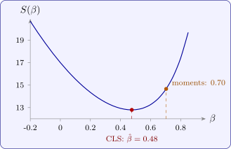

13.3 Fitting a moving average process
Fitting an MA process is more complex than fitting an AR process, because the least-squares method cannot be applied directly: the regressors would be the past shocks \(Z_{t-1}, Z_{t-2}, \dots \), which are not observed. The same is true for ARMA and ARIMA models. Two approaches are common.
Method of moments
Equate the theoretical ac.f. to the sample one and solve. For an MA(1) this means solving \(\beta /(1 + \beta ^2) = r_1\) and taking the invertible root (Example 6.2.2). This is simple but inefficient, and it fails altogether if \(|r_1| > \frac 12\).
Conditional least squares
For a trial value of the parameter, the shocks can be reconstructed recursively from the data by inverting the model, and their sum of squares can then be minimised. For the MA(1) model \(X_t = Z_t + \beta Z_{t-1}\), rewrite it as \(Z_t = X_t - \beta Z_{t-1}\). Starting from \(z_0 = 0\), which is its mean, compute \[ z_1 = x_1 , \quad z_2 = x_2 - \beta z_1 , \quad z_3 = x_3 - \beta z_2 , \quad \dots , \qquad S(\beta ) = \sum _{t=1}^nz_t^2 , \] and choose the \(\beta \) that minimises \(S(\beta )\). This is a non-linear minimisation in \(\beta \), done by a grid search or by the iterative methods used for non-linear regression. The starting value \(z_0 = 0\) matters little when the model is invertible, because its effect on \(z_t\) is multiplied by \((-\beta )^t\), which dies away. Maximum likelihood, used by most software, refines the treatment of the start but gives similar answers for long series.
Example 13.3.1. Eight observations from a process with known mean \(0\) are \(0\), \(0\), \(-2\), \(-1\), \(-2\), \(0\), \(2\), \(2\). Fit an MA(1) model by conditional least squares, and compare with the method of moments.
Solution. The recursion. For \(\beta = 0.5\), \(z_t = x_t - 0.5z_{t-1}\) gives \begin {gather*} z_1 = 0 , \quad z_2 = 0 , \quad z_3 = -2 , \quad z_4 = -1 - 0.5(-2) = 0 , \\ z_5 = -2 , \quad z_6 = 0 + 1 = 1 , \quad z_7 = 2 - 0.5 = 1.5 , \quad z_8 = 2 - 0.75 = 1.25 , \end {gather*} so \(S(0.5) = 4 + 0 + 4 + 1 + 2.25 + 1.5625 = 12.81\). Repeating for other values:
| \(\beta \) | 0 | 0.2 | 0.4 | 0.47 | 0.5 | 0.6 | 0.8 |
| \(S(\beta )\) | 17.00 | 14.35 | 12.93 | 12.80 | 12.81 | 13.26 | 17.41 |
The minimum is near \(\hat \beta = 0.48\), where \(S = 12.797\), giving \(\hat \sigma _Z^2 = 12.80/(8 - 1) = 1.83\). Figure 10 shows the curve.
Method of moments. With the known mean, \(r_1 = \sum x_tx_{t-1}/\sum x_t^2 = 8/17 = 0.471\). Solving \(\beta /(1 + \beta ^2) = 0.471\) gives the invertible root \(\beta = (1 - \sqrt {1 - 4(0.471)^2})/(2 \times 0.471) = 0.70\). The two estimates differ noticeably; with eight observations neither is precise, but the least-squares estimate uses all the data, not just \(r_1\), and its sum of squares at the moment estimate is \(S(0.70) = 14.66\), well above the minimum.

Questions on this section
Stuck on something here? Ask below and it stays attached to this topic.